おすすめ事例
空室対策につながった
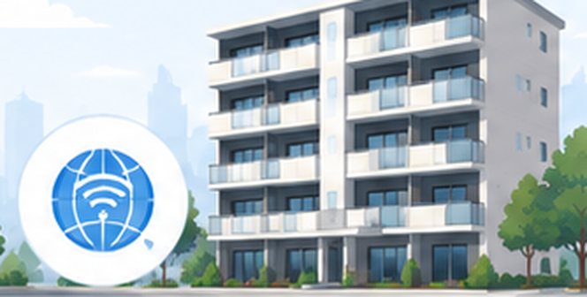
導入の目的
空室対策・物件価値向上
周辺物件との差別化を図り、空室期間の短縮と物件価値の向上を目指して導入しました。
導入後の実感
ネット無料設備の訴求で内見時の印象が良くなり、入居検討者への説明もしやすくなったと感じています。
導入後の効果イメージ
空室対策
反響アップ
物件価値向上
受付時間 平日 10:00-19:00
マンション・アパート向けの
全戸一括インターネット設備を
建物に合わせて提案します。
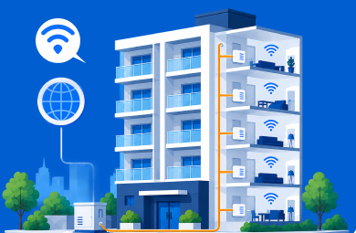
入居者に
選ばれる
インターネット無料は今や入居条件の必須項目に。
物件価値が
向上
差別化で競合物件に負けない魅力ある設備。
管理の手間を
軽減
トラブル対応もまとめてサポート。
こんなお悩みありませんか？
いまや「ネット無料」は付加価値ではなく、入居者に選ばれるための基本設備。
導入の有無が、空室対策や物件の印象にも関わります。
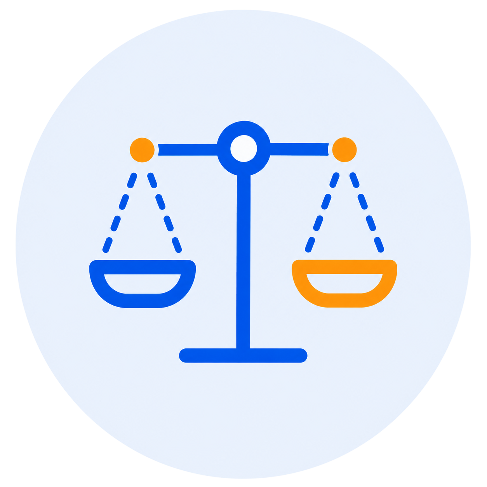
「ネット無料」でないと、内見時の比較で不利になり、
空室対策として弱い。
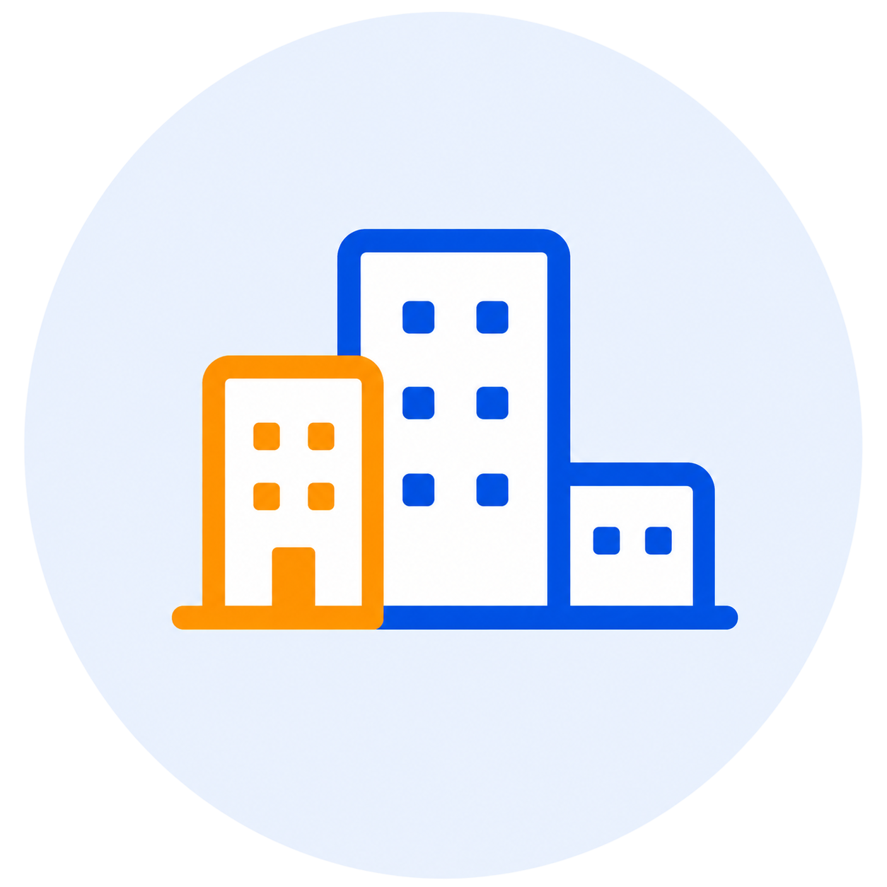
個別契約のままでは、競合物件との差別化がしづらい。
無料化しても、同時利用で遅くなるのではという不安や、
入居者からのクレーム懸念がある。
回線・配線・機器管理まで含めると、
管理会社やオーナーの負担が大きい。
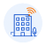
空室対策 魅力的な設備で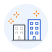
他物件と差別化 ネット無料で物件のネット無料物件化のメリット
オーナー様・管理会社様
入居者にとってのメリットはもちろん、オーナー様・管理会社様にとっても多くの効果があります。
物件の魅力を高め、安定した運用を支える「ネット無料設備」の４つのメリットをご紹介します。
空室対策に、
いちばん効く。
「ネット無料」は、入居者が物件を選ぶ決め手のひとつ。問い合わせ・内見・成約のきっかけを増やし、
空室期間の短縮につながります。
競合との差別化で、
選ばれる物件に。
近隣物件との比較で「ネット無料」は大きな強み。他物件との差をつけ、内見時の印象も向上し、成約率のアップが期待できます。
入居者満足度の向上で、
長く住まれる物件に。
入居後すぐに快適なネット環境が使えることで、満足度と定着率が高まります。口コミや紹介にもつながり、空室リスクを低減します。
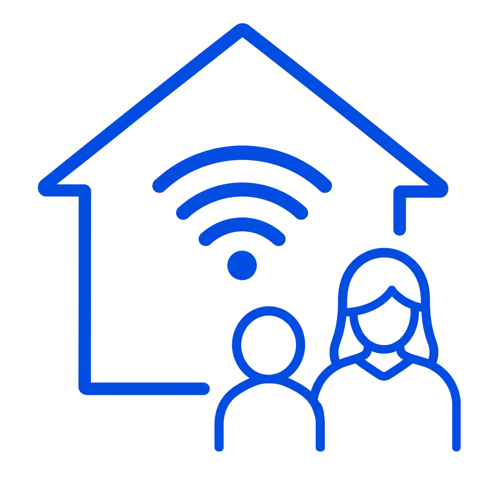
管理負担も、
まとめて軽減。
入居者ごとの個別契約・個別対応をやめ、建物まるごと一括管理へ。管理会社様の運用工数を抑え、トラブル対応やサポートもスムーズになります。
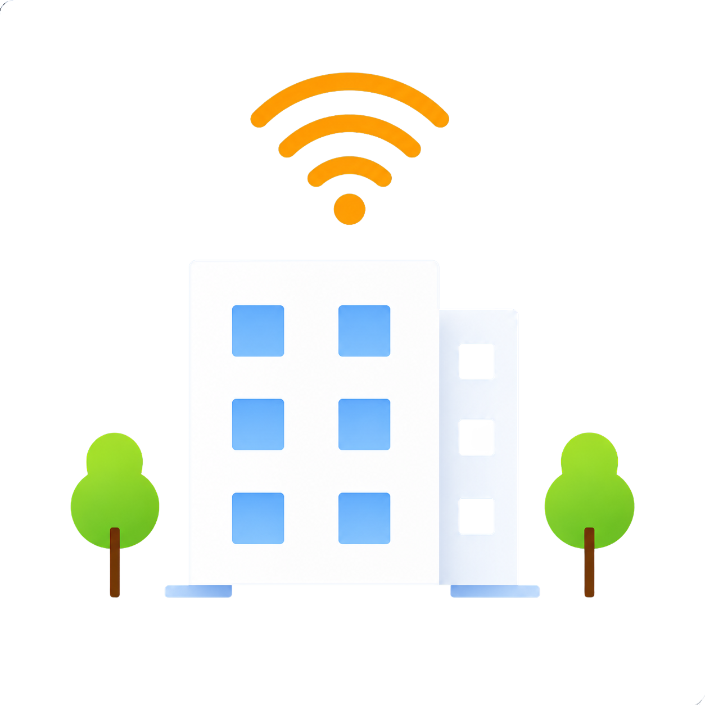
※効果には物件やエリア・導入状況などによる個人差があります。
物件訴求の強化
ネット無料を強みに、他物件との差別化で成約率をアップ。
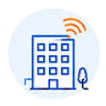
空室対策
魅力的な設備で入居検討者を引きつけ、空室リスクを軽減。
入居者満足度向上
快適なネット環境で入居後の満足度が高まり、長期入居につながる。
オーナー負担軽減
入居者の通信環境を整えても、オーナー様の費用負担は不要。
料金の目安
建物規模や配線状況に応じて、無理のない導入プランをご提案します。
まずは概算の目安からご確認いただけます。
月額費用の目安
1戸あたり月額 1,500 円〜
戸数や回線構成に応じて変動します。
初期費用の目安
1戸あたり初期費用 30,000 円〜
配線状況や建物構造により異なります。
費用が変わる主な要因
戸数
建物構造
既存配線・設備状況
戸数が多いほど1戸あたりの費用は抑えやすくなります。
建物の構造や共用設備の有無で費用が変わります。
既存の配線や設備の状況により、工事費が変動する場合があります。
図面や戸数情報があれば、
概算費用のご相談が可能です。
◯戸数に応じた概算費用を知りたい。◯現地調査について相談したい。
◯建物に合う構成を知りたい。◯無料ネット設備について相談したい。
オーナーさま・管理会社さま向けに、わかりやすくご案内します。
※掲載価格は一例です。建物規模・設備条件により異なります。詳細は現地確認・お見積りにてご案内します。

同時利用に強い設計
建物規模に応じた回線設計で、
安定した利用環境を整えます。
最大10Gクラスの回線と、同時接続数（NATセッション数）を踏まえた機器設計で、
夜間のピークタイムでも安定。「無料にしたら遅くなった」を起こさせません。
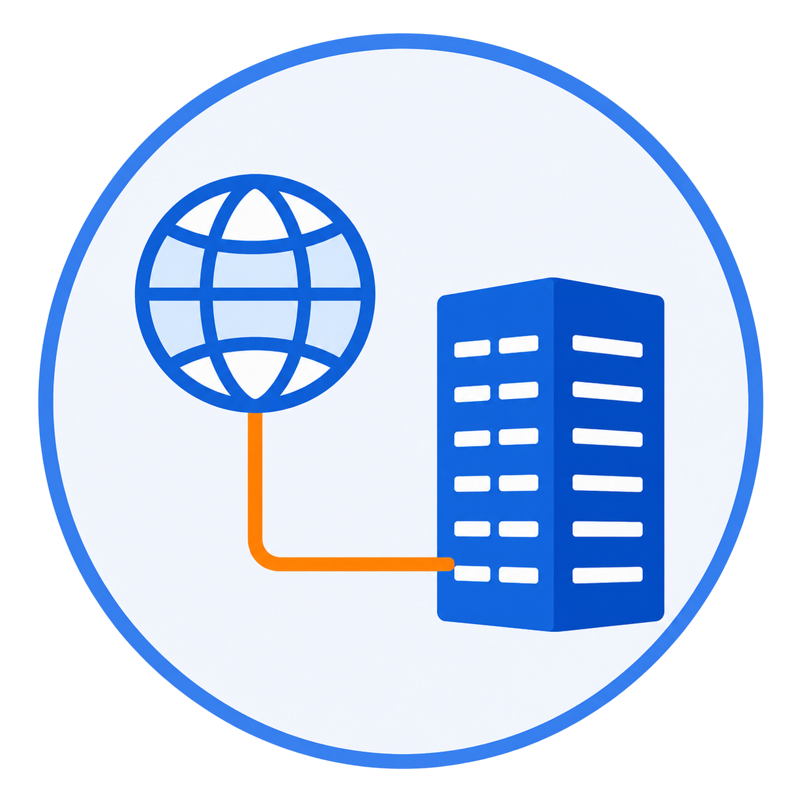
最大10Gクラス
最大10Gクラスまで対応可能
建物規模に応じた高速回線設計
ピーク帯でも安定
NAT
NAT設計
同時セッション数を考慮した機器構成
夜間利用を想定した設計
24時間
24時間対応
遠隔監視で安定運用
導入後の運用も安心
最大10Gクラスまで対応可能
NAT対応
24時間365日サポート
安定・安心のインターネット環境を
すべての入居者様へ。
ネットワーク設計の特長
住戸ごとの通信分離
VLANで住戸ごとに通信を分離。他の住戸から見えない・つながらない。セキュアでプライバシーに配慮した設計です。
住戸ごと・用途ごとに分けて、
安心して使える環境を整えます。
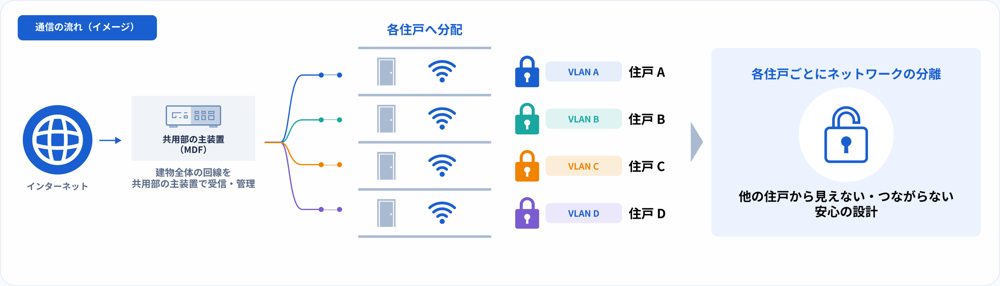
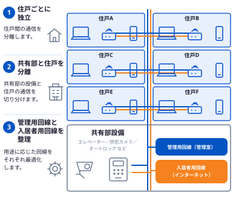
セキュリティ
住戸間の通信を分離し、情報漏えいや不正アクセスを防止。
安定運用
用途ごとに最適化された回線で、安定した通信品質を実現。
トラブル軽減
原因の切り分けがしやすく、障害時の影響を最小限に抑えます。
※図はイメージです。建物により構成は異なります。
ネットワーク分離の補足
住戸ごとの通信分離
セキュリティ・プライバシー・安定性を、建物全体でしっかり支えます。
住戸ごと・用途ごとに分けて管理しやすく、
安心して使える環境を整えます。
セキュリティ
住戸間で通信が見えない・到達しない分離設計で、不正アクセスや情報漏えいのリスクを低減します。
プライバシーに
配慮
共用Wi-Fiでも、他の入居者の端末や通信が混在せず、個人情報や利用状況を守ります。
他室の影響を
受けにくい
他の住戸の通信量や利用状況に左右されにくく、安定した速度で快適にご利用いただけます。
住戸ごとに通信を分けることで、入居者同士が混在しない安心設計。
セキュリティ・プライバシー・安定性のすべてを、建物全体でサポートします。
セキュリティ面の安心
住戸ごとにネットワークを分離することで、他の住戸や共用部からの不正アクセスリスクを低減します。
通信トラブルの影響を抑えやすい
1住戸の通信トラブルが、他の住戸に広がりにくく、安定した利用環境を維持しやすくなります。
管理しやすい設計
住戸・共用部それぞれで管理が可能。トラブル時の切り分けや運用もスムーズに行えます。
安心・安全・運用効率の
バランスを考えたネットワーク設計です。
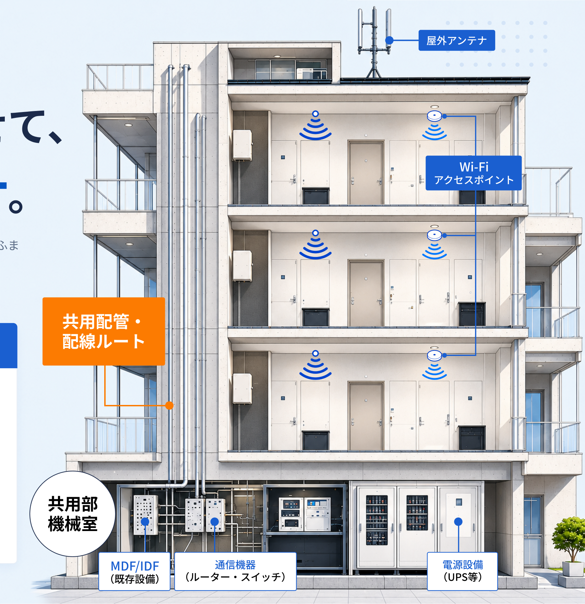
設計・施工
配線
Wi-Fi設計
マンション・アパートごとに異なる構造や配管・設備環境をふまえ、最適な配線ルートと機器配置を設計します。
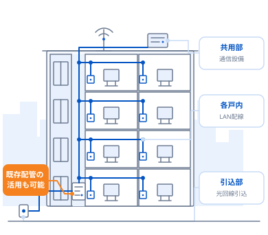
建物に合わせた配線計画
構造や用途に合わせて、最適なルートを設計。無理のない通信環境を実現します。
既存設備も確認
配管・設備の状況を事前に確認し、既存資産を活かした計画をご提案します。
見た目や管理性にも配慮
美観や将来のメンテナンス性まで考えた、使いやすい配線設計を行います。
対応建物
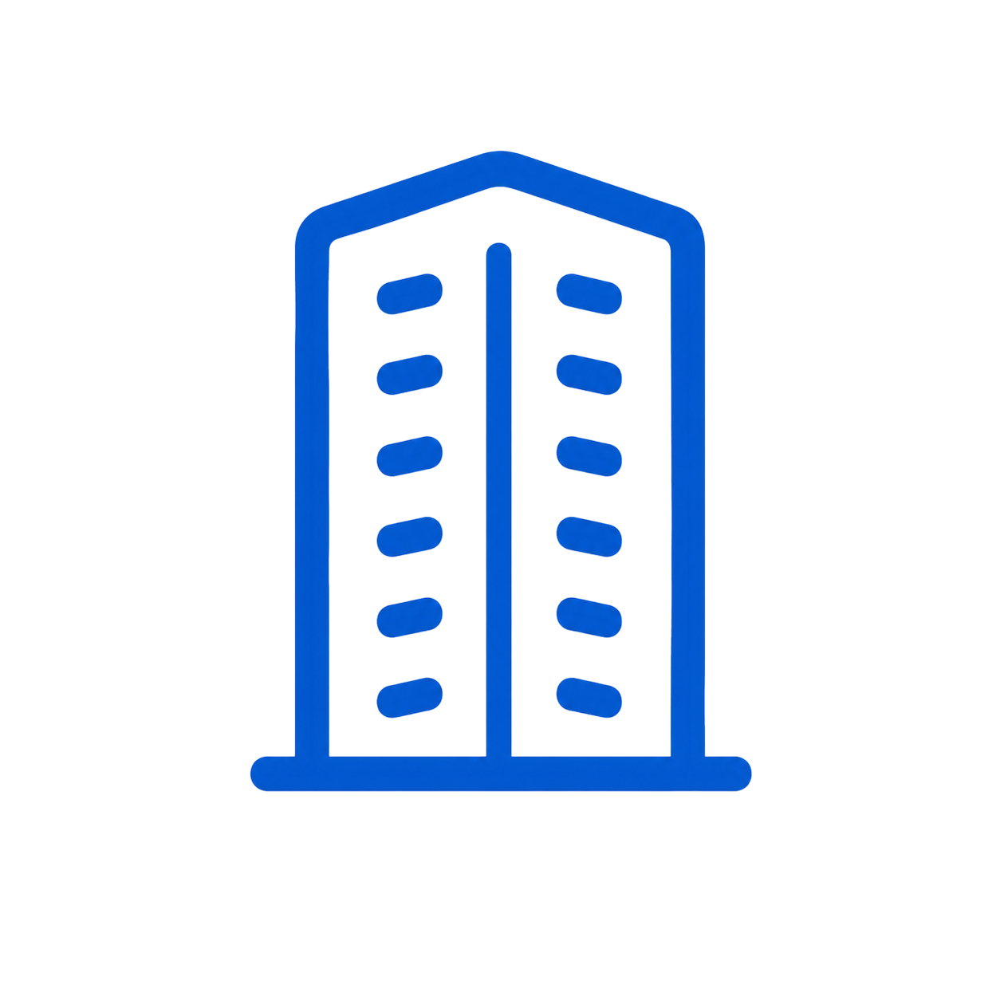
マンション・アパート設計のポイント
既存設備や配線ルート、Wi-Fiの届き方まで確認し、無理のない構成をご提案します。
建物条件や利用環境に合わせて、
無理のないネットワーク構成をご提案します。
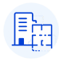
配線計画
建物の構造や用途に合わせて、最適な配線ルートを計画します。
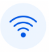
Wi-Fiエリア設計
共用部や各部屋の利用状況に合わせて、快適につながるエリアを設計します。
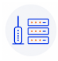
引き込み・機器構成
建物に適した回線の引き込み方法や、必要な機器構成をご提案します。
保守性への配慮
将来の増設やトラブル対応も見据えた、保守しやすい設計を行います。
施設の形や使い方は一つひとつ異なります。
最適なネットワーク設計で、快適な環境を実現します。
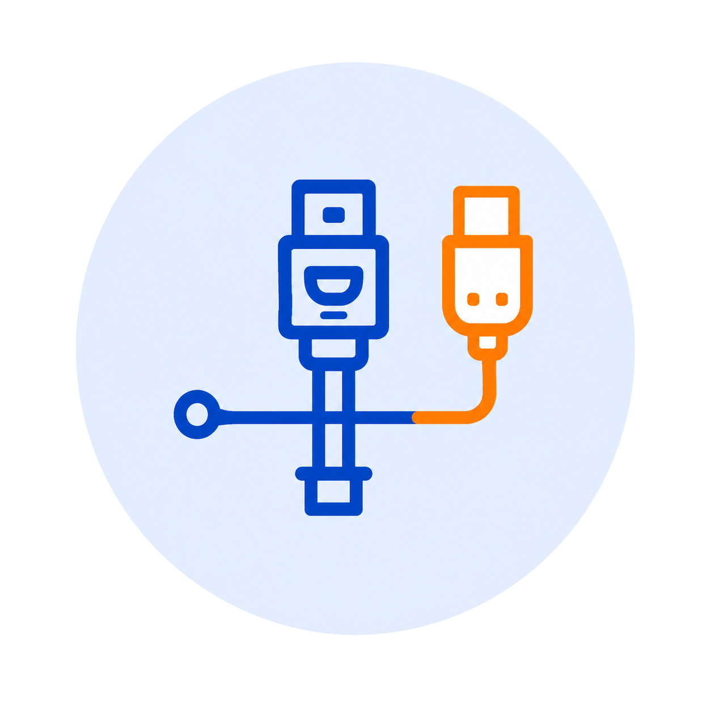
配線設計
既存配管・MDF/IDFを調査し、最適な配線ルートを設計します。
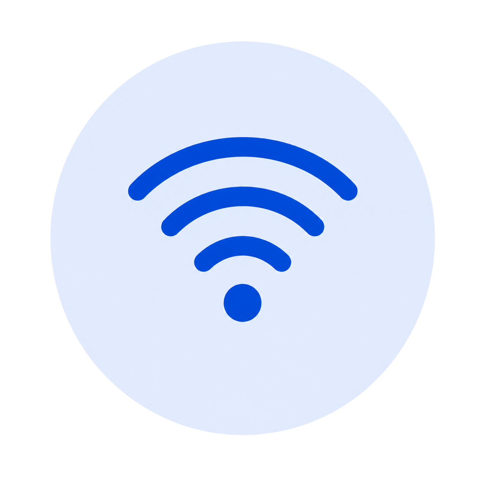
Wi-Fiエリア設計
電波が届きにくい場所も考慮した機器配置で、ムラのない通信環境に。
現地調査・事前検証
導入前に現地を調査・検証し、無理のない最適プランをご提案します。
設計時に確認する主なポイント
建物構造・配管経路
MDF/IDF・電源環境
各戸までの配線方式
Wi-Fi電波強度・干渉
将来の増設・拡張性
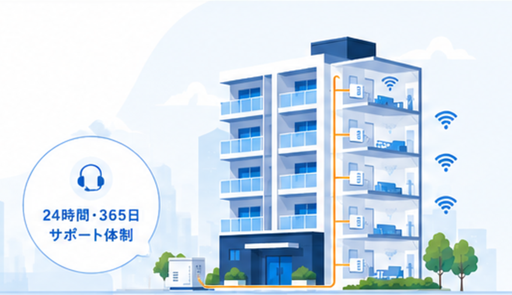
連携サポート
導入後の問い合わせ対応や保守まで、
継続的にサポートします。
管理
保守
導入して終わりではなく、管理・保守・問い合わせ対応まで
一括でサポート。トラブル時も迅速に対応し、管理会社・オーナーの負担を最小化します。
建物の「困った」を、
施設ネットがまとめて受け止めます。
建物・設備
通信・Wi-Fi・機器の
不具合やトラブル
入居者・利用者
Wi-Fiがつながらない、
速度が遅いなど
管理者・オーナー
状況確認・依頼
各種お問い合わせ
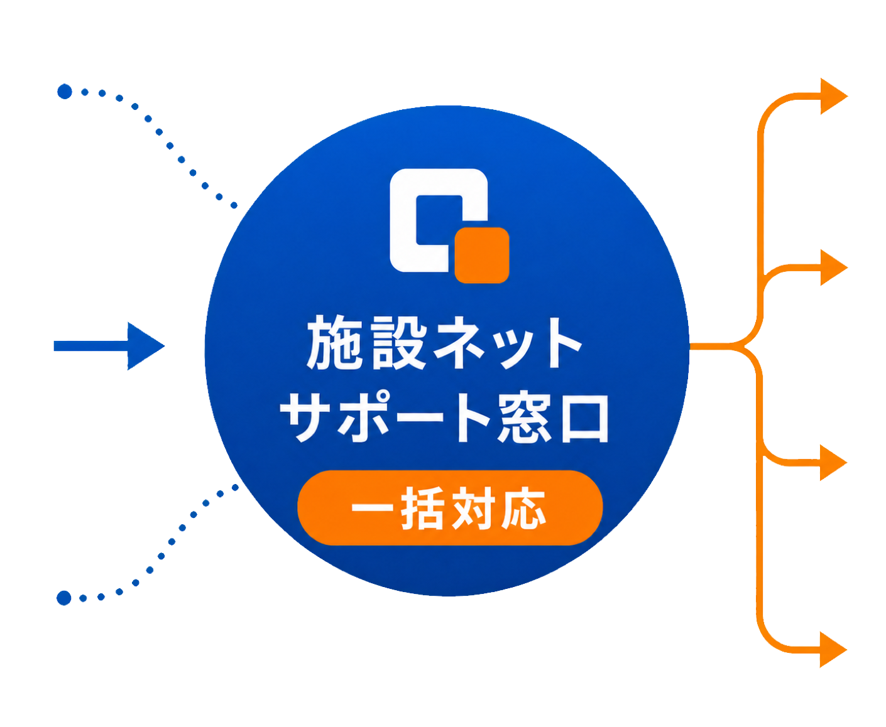
遠隔監視・状況把握
ネットワークや機器を常時監視し、
異常を早期に検知・通知。
お問い合わせ窓口
入居者・管理会社からのご連絡を
一括で受付します。
一次対応・ご案内
切り分け・設定案内などを行い、
迅速に解決へつなぎます。
保守手配・復旧対応
必要に応じて専門スタッフを手配し、
復旧までサポートします。
1問い合わせ対応
専門スタッフが迅速・丁寧に対応します。
2保守サポート
障害対応や設定変更もしっかりサポート。
3管理のしやすさ
管理画面で状況を可視化。運用負担を軽減します。
はじめてでも安心のサポート体制
導入後も長期的に寄り添い、安心した運用を支えます。
導入メリット
管理会社・オーナーにうれしいメリット
問い合わせ対応や保守手配をまとめて任せられるため、
日々の管理業務をスムーズに進められます。
問い合わせ負担や管理の手間を
抑えやすい運用体制をご提案します。
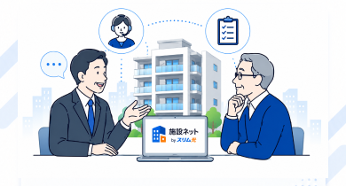
問い合わせ負担の軽減
入居者からの問い合わせ対応を代行し、管理会社・オーナー様の負担を軽減します。
管理しやすい
一元管理の仕組みで、状況把握や状況共有がスムーズに行えます。
長期運用しやすい
安定したサポート体制と設備で、長く安心して運用できます。
すべてお任せだから、
管理にかかる時間と手間を
大幅に削減
管理会社・オーナーにうれしいメリット
窓口が一本化されてラクに
建物・入居者・設備の問い合わせを
まとめて受け付けます。
対応履歴をまとめて把握
対応状況や履歴を一元管理。
報告もスムーズで安心。
管理負担を軽減し、安心
専門チームが継続的にサポートするので、本業に集中できます。
運用体制やサポート内容について、まずはお気軽にご相談ください。
運用体制について相談する導入イメージ
空室対策や入居者満足度の向上、管理負担の軽減など、集合住宅にインターネット設備を導入した場合のイメージをご紹介します。
おすすめ事例
空室対策につながった

導入の目的
空室対策・物件価値向上
周辺物件との差別化を図り、空室期間の短縮と物件価値の向上を目指して導入しました。
導入後の実感
ネット無料設備の訴求で内見時の印象が良くなり、入居検討者への説明もしやすくなったと感じています。
導入後の効果イメージ
入居者満足が上がった
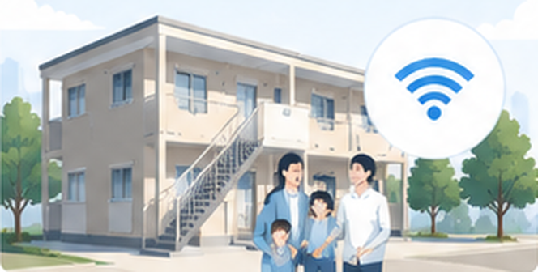
導入の目的
入居者満足向上・他物件との差別化
入居者に選ばれる物件づくりのため、設備面での魅力向上を図り導入を決めました。
導入後の実感
無料インターネット付きが決め手になりやすく、既存入居者からの評価も安定しています。
導入後の効果イメージ
問い合わせ対応が減った
導入の目的
管理負担軽減・対応効率化
入居者からの通信関連の問い合わせが多く、対応負担の軽減と業務効率化を目指して導入しました。
導入後の実感
通信関連の問い合わせ窓口が整理され、入居者対応の手間が減って管理業務に集中しやすくなりました。
導入後の効果イメージ
※掲載内容は一部のお客さまの声を抜粋しています。効果には個人差があり、すべての物件で同様の結果を保証するものではありません。
01募集時の
訴求力アップ
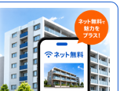
ネット無料を強みに、他物件との差別化ができ、問い合わせや内見数の増加が期待できます。
02入居者
満足度向上
高速・安定のインターネット環境は、快適な暮らしを支え、入居者の満足度向上・長期入居にもつながります。
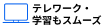
03管理面の
負担軽減
インターネットに関する問い合わせやトラブル対応を軽減し、管理業務の効率化につながります。
上記は導入により期待される変化のイメージです。
効果を保証するものではありません。
導入イメージ
建物確認からご提案、工事、
利用開始後のサポートまで対応します。
建物確認からご提案、工事、利用開始後の
サポートまで対応します。
ご相談
物件情報やご要望をお伺いし、最適な進め方をご提案します。
現地確認
建物の構造や配線状況を確認し、最適な環境を調査します。
ご提案・お見積り
調査内容をもとに、最適なプランとお見積りをご提案します。
工事・設定
配管工事や機器の設置・設定を行い、安定した環境を構築します。
利用開始・サポート
ご利用開始後も、問い合わせ対応や保守サポートまでしっかり対応します。
導入後も安心してご利用いただけるよう、
継続的にサポートします。
無料相談
お電話・Webから、
建物やご要望を
ヒアリングします。
現地調査
建物・配線ルート・設置箇所を
確認し、最適な構成を
検討します。
お見積り
費用・導入時期・ご提案内容を、わかりやすく
ご案内します。
工事・設定
配線工事や機器設置、
初期設定までまとめて
対応します。
運用開始・保守
導入後の運用サポートや
トラブル対応まで継続して
支えます。
ⓘ 導入時期・費用・保守範囲は、建物条件やご要望に応じてご案内します。
まずは無料相談から、お気軽にご相談ください。
導入をご検討中の方へ
はじめての方にもあんしんしてご検討いただけるよう、よくいただくご質問をまとめました。
よくいただくご質問をまとめました。
その他のご相談もお気軽に
お問い合わせください。
費用はどれくらいかかりますか？
建物の規模・戸数・配線状況によって変わるため一律ではありませんが、上の「料金の目安」の水準からご案内しています。現地調査のうえ、無料でお見積りをご提示しますので、まずは概算からお気軽にご相談ください。
古い建物でも導入できますか？
はい、多くの場合ご導入いただけます。建物構造や既存の配管・配線を現地調査で確認し、建物に合った配線方式・機器構成をご提案します。
既存の回線やWi-Fiを活かせますか？
活かせる場合があります。現在の回線や設備の状況を確認し、流用できるものは活かしながら、無駄のない構成を設計します。
工事中に入居者への影響はありますか？
共用部を中心とした作業のため、影響は最小限に抑えられます。作業時間帯や動線は事前に調整し、入居者さまへのご案内文の準備もサポートします。
入居中でも工事できますか？
可能です。居室内での作業が必要な場合も、事前のご案内と日程調整のうえで進めますので、入居中の物件でもご安心ください。
ネットワークを分けることはできますか？
できます。VLANにより住戸ごとに通信を分離し、他の住戸から見えない・つながらない、セキュリティに配慮した設計が可能です。
保守対応はありますか？
あります。導入後は遠隔監視と保守体制で運用を支え、不具合時の切り分けから復旧の手配まで一括で対応します。
現地調査だけでも依頼できますか？
はい、現地調査・お見積りのみのご依頼も無料で承っています。導入可否の確認だけでも、お気軽にご相談ください。
※内容は建物やプランによって異なります。
詳しくはお問い合わせください。